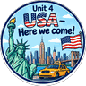

Grund- und Mittelschule am Sportpark
GRUMI Lernplattform · Englisch 7
Zurück zur Übersicht
Start
Englisch 7
Unit 4
Vokabeltrainer Unit 4

Vokabeltrainer Unit 4
USA – here we come! · Englisch 7. Klasse
0 Vokabeln
🔊 Aussprache
🗂️ Karteikarten
📖 Wortliste
Kategorie wählen
Übungsart
Multiple Choice
Tippen
Karteikarten
Bedeutungen
1 reicht
2 nötig
3 nötig
alle
Richtung
Zufällig
EN → DE
DE → EN
0
Richtig
0
Falsch
0
Übrig
Unit 4
Englisch → Deutsch
–
🔊 anhören
Beispielsatz erscheint nach der Antwort.
💡 Tipp
Prüfen
Überspringen
Weiter
–
Zum Umdrehen tippen
–
Lösung
🔊 anhören
↺ Nochmal üben
✓ Gewusst
Runde beendet 🇬🇧
0%
Diese Wörter nochmal anschauen
Nochmal üben
Nur die schweren Wörter
Alle Vokabeln
📖 Wortliste anzeigen